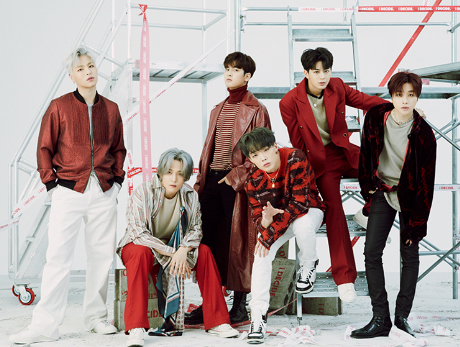

아이콘는 YG엔터테인먼트 소속의 6인조 보이그룹이다.
iKON이란 그룹명은 영어 icon의 c를 k로 바꾼 것으로, 한국을 대표하는 아이콘이 되라는 의미가 담겨 있다.

B팀이라는 이름으로 대중에게 처음 알려졌던 2013년 WIN: Who is Next?, iKON 멤버가 되기 위해 경쟁한 2014년 MIX & MATCH. 총 2번의 서바이벌 프로그램을
통해 많은 관심을 받으며[3] 2015년 9월 15일 선공개곡 '취향저격'으로 데뷔하게 된다. '취향저격'은 차트 올킬 1위, 발매와 동시에 지붕킥 진입 후 18회 지붕킥을 기록한다.
그 후 시상식에서 Mnet 아시안 뮤직 어워드 남자 신인상, 멜론 뮤직 어워드 신인상, 골든디스크 어워즈 디지털음원부문 신인상 등 각종 신인상을 휩쓴다.